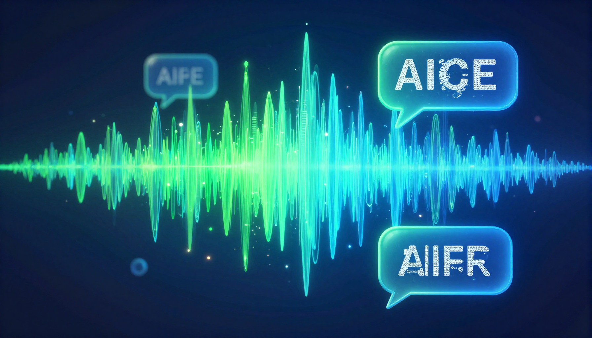

Audio
Best AI Voice Generator 2026: Top 10 Text-to-Speech Tools

The Best AI Voice Generators
AI voice generation has reached a point where synthetic voices are nearly indistinguishable from human ones. Whether you need voiceovers for videos, audiobooks, podcasts, or accessibility features, these AI text-to-speech tools deliver professional results.
| # | Tool | Best For | Price | Quality |
|---|---|---|---|---|
| 1 | ElevenLabs | Best voice quality overall | Free / $5/mo | 10/10 |
| 2 | Murf AI | Best for video voiceovers | Free / $26/mo | 9/10 |
| 3 | Play.ht | Best voice cloning | Free / $31/mo | 9/10 |
| 4 | Amazon Polly | Best for developers | Pay-per-use | 8/10 |
| 5 | Google Cloud TTS | Best for enterprise | Pay-per-use | 8/10 |
| 6 | Speechify | Best for reading aloud | Free / $11/mo | 8.5/10 |
| 7 | Descript | Best for podcast editing | Free / $24/mo | 8/10 |
| 8 | NaturalReader | Best for accessibility | Free / $18/mo | 7.5/10 |
| 9 | Listnr | Best multilingual | $9/mo+ | 7.5/10 |
| 10 | Lovo AI | Best for marketing | $25/mo+ | 7.5/10 |
ElevenLabs — The Gold Standard
ElevenLabs produces the most natural-sounding AI voices available. The voice quality is remarkable — expressions, pauses, and emotional inflections feel genuinely human. Their free tier includes 10,000 characters/month, making it easy to test.
Free AI Voice Generators
- ElevenLabs Free — 10K chars/month, best quality
- Murf AI Free — 10 min of voice generation
- Speechify Free — Reading aloud with AI voices
- NaturalReader Free — Basic text-to-speech
🎁 Free AI Tools Guide 2026
Download our free guide with 50+ AI tool comparisons, pricing, and recommendations.
Download Free Guide →📖 Related Articles
Generate AI Voices Today
Create natural-sounding voiceovers with the best AI voice generator.
Try ElevenLabs Free